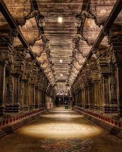

The Nataraj Temple Chidambaram is also referred as Thillai Nataraj Temple. This temple is dedicated to Lord Shiva. It is in the southern state of Tamilnadu in India. The temple has a deep mythical connection. When the name of the town was Thillai, a Shiva shrine used to be there in the temple. Chidambaram is the name of the city where the temple is now situated literally meaning “clothed in thought” or “atmosphere of wisdom”. The architecture of the temple represents the link between arts and spirituality. The temple was constructed during the 10th Century when Chidambaram used to be the capital of the Chola dynasty. The Cholas considered Lord Shiva as Nataraj as their family deity. The Nataraj temple has undergone damage, renovation and expansion throughout the 2nd millennium. Although Shiva is the main deity of the temple, it also represents major themes from Vaishnavism, Shaktism and others with all due reverence. The Chidambaram temple complex proudly boasts of being one of the oldest temple complexes in Southern India. The most unique characteristic of the Nataraj Temple is the bejewelled image of Nataraj. The temple has five main Halls or Sabhas namely the Kanaka Sabha, the Cit Sabha, Nritta Sabha, Deva Sabha and Raja Sabha. Nataraj happens to be one of the most momentous forms of Lord Shiva. Chidambaram is also amongst one of the most celebrated shrines of Lord Shiva in the country. The place also bears a significant importance from both cultural point of view and historical perspective as well.Now R & D, Western scientists have proved that at Lord Nataraja ‘s big toe is the Centre Point of World ‘s Magnetic Equator.
